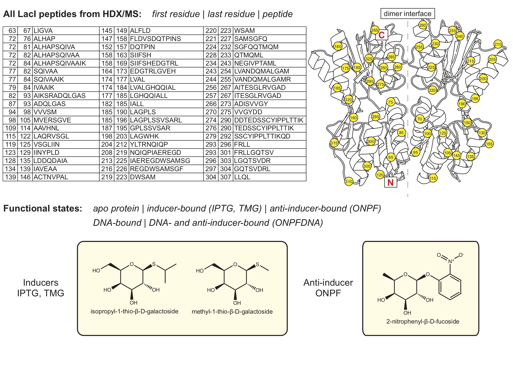

Explore HDX/MS data for LacI peptides.¶

First choose the state(s).¶
import pandas as pd
import numpy as np
import math
import matplotlib.pyplot as plt
import pytraj as pt
import nglview as nv
import seaborn as sns
import ipywidgets as widgets
from scipy.optimize import curve_fit
from matplotlib.ticker import FormatStrFormatter
print('Choose from the following functional states: ')
CBwidget_IPTG = widgets.Checkbox(description = 'IPTG, an inducer molecule', value=True, disabled=False)
CBwidget_ONPF = widgets.Checkbox(description = 'ONPF, an anti-inducer molecule', value=True, disabled=False)
CBwidget_APO = widgets.Checkbox(description = 'APO protein', value=False, disabled=False)
CBwidget_DNA = widgets.Checkbox(description = 'operator DNA', value=True, disabled=False)
CBwidget_TMG = widgets.Checkbox(description = 'TMG, an inducer molecule', value=False, disabled=False)
CBwidget_ONPFDNA = widgets.Checkbox(description = 'ONPF and operator DNA', value=False, disabled=False)
display(CBwidget_IPTG, CBwidget_ONPF, CBwidget_APO, CBwidget_DNA, CBwidget_TMG, CBwidget_ONPFDNA)
Choose from the following functional states:
Run the next code block to confirm your choices.¶
states_list = []
if CBwidget_IPTG.value == True:
states_list.append('IPTG')
if CBwidget_ONPF.value == True:
states_list.append('ONPF')
if CBwidget_APO.value == True:
states_list.append('APO')
if CBwidget_DNA.value == True:
states_list.append('DNA')
if CBwidget_TMG.value == True:
states_list.append('TMG')
if CBwidget_ONPFDNA.value == True:
states_list.append('ONPFDNA')
print('Chosen states:'); print(*states_list)
res_peptides_file = pd.ExcelFile('lacI_files/peptide_list.xlsx')
states_dict = {}
peptide_states_list = ['peptide']
for state in states_list:
states_dict[state] = pd.read_excel(res_peptides_file)
peptide_states_list.append(state)
single_state_dict = states_dict.get(states_list[0])
all_peptides = single_state_dict[['peptide']].values.tolist()
all_peptides_2 = []
first_res = single_state_dict[['first_res']].values.tolist()
index = 0
while index < len(all_peptides):
current_first_res = str(int(first_res[index][0]))
all_peptides_2.append(current_first_res + ' - ' + all_peptides[index][0])
index = index + 1
Chosen states:
IPTG ONPF DNA
Compile exchange information for each peptide for chosen states.¶
############
def getIndexes(dfObj, value):
listOfPos = []
result = dfObj.isin([value])
seriesObj = result.any()
columnNames = list(seriesObj[seriesObj == True].index)
for col in columnNames:
rows = list(result[col][result[col] == True].index)
for row in rows:
listOfPos.append((row, col))
return listOfPos
############
# create dictionary keys from peptides
# in subsequent code: add state and each TP avg exchange measurements as values for peptide keys
peptide_exchange_dict = {}
stdev_dict_IPTG = {}
stdev_dict_ONPF = {}
stdev_dict_APO = {}
stdev_dict_DNA = {}
stdev_dict_ONPFDNA = {}
stdev_dict_TMG = {}
stdev_dict_dict = {'IPTG':stdev_dict_IPTG,
'ONPF':stdev_dict_ONPF,
'APO':stdev_dict_APO,
'DNA':stdev_dict_DNA,
'ONPFDNA':stdev_dict_ONPFDNA,
'TMG':stdev_dict_TMG}
for peptide in all_peptides:
peptide_exchange_dict[peptide[0]] = []
for state in states_dict:
i = 0 # peptide counter
for peptide in states_dict[state]['peptide']:
peptide_first_res = states_dict[state]['first_res'][i]
peptide_last_res = states_dict[state]['last_res'][i]
peptide_file = pd.ExcelFile('lacI_files/compiled_data/' + str(peptide_first_res)
+ '_' + str(peptide_last_res) + '_' + peptide + '_fitting.xlsx')
raw_df = pd.read_excel(peptide_file, 'Peptide SD', nrows = 15)
column_vals = []
listOfPositions = getIndexes(raw_df, state)
for j in range(len(listOfPositions)):
temp_string = (listOfPositions[j][1])
position = int(temp_string[-2:])
column_vals.append(position) # columns in spreadsheet corresponding to data label
peptide_exchange = {}
for element in column_vals:
if state.lower() == (raw_df.iloc[2][element]).lower():
peptide_exchange[state] = list(raw_df.iloc[4:13,element+2])
peptide_exchange_dict[peptide].append(peptide_exchange)
stdev_df = pd.read_excel(peptide_file, 'Peptide SD', usecols = "H,P,Y,AH,AP,AX",
skiprows = 26, nrows = 35, header = None)
stdev_df = stdev_df[0:9]
stdev_dict_IPTG[peptide] = list(stdev_df.iloc[:, 0])
stdev_dict_ONPF[peptide] = list(stdev_df.iloc[:, 1])
stdev_dict_APO[peptide] = list(stdev_df.iloc[:, 2])
stdev_dict_DNA[peptide] = list(stdev_df.iloc[:, 3])
stdev_dict_ONPFDNA[peptide] = list(stdev_df.iloc[:, 4])
stdev_dict_TMG[peptide] = list(stdev_df.iloc[:, 5])
i = i + 1
print('done!')
done!
Choose two peptides to visualize.¶
single_state_dict = states_dict.get(states_list[0])
all_peptides = single_state_dict[['peptide']].values.tolist()
all_peptides_2 = []
first_res = single_state_dict[['first_res']].values.tolist()
index = 0
while index < len(all_peptides):
current_first_res = str(int(first_res[index][0]))
all_peptides_2.append(current_first_res + ' - ' + all_peptides[index][0])
index = index + 1
DDwidget = widgets.Dropdown(
options = all_peptides_2,
value = '72 - ALHAPSQIVAA',
description = 'Peptide 1:',
disabled = False,
)
DDwidget2 = widgets.Dropdown(
options = all_peptides_2,
value = '109 - AAVHNL',
description = 'Peptide 2:',
disabled = False,
)
display(DDwidget)
display(DDwidget2)
Run the next block to confirm your choices and fit regression functions to the raw data.¶
peptide_input1 = str(DDwidget.value)
peptide_input1 = peptide_input1.split()[-1]
peptide1_firstres = str(DDwidget.value).split()[0]
peptide_input2 = str(DDwidget2.value)
peptide_input2 = peptide_input2.split()[-1]
peptide2_firstres = str(DDwidget2.value).split()[0]
selected_peptides = [peptide_input1, peptide_input2]
print('Peptide 1: ' + selected_peptides[0])
print('Peptide 2: ' + selected_peptides[1])
peptide1_list = peptide_exchange_dict.get(peptide_input1)
peptide2_list = peptide_exchange_dict.get(peptide_input2)
# fitting
def exchange_fit(x, a, b, c, d, e, f, g):
max_protons == a + b + c + g - 2 - num_prolines
d > e
e > f
d > f
max_protons == a + b + c + g - 2 - num_prolines
return max_protons - a * np.exp(-d * x) - b * np.exp(-e * x) - c * np.exp(-f * x) - g
def exchange_fit_low(x, b, c, e, f, g):
max_protons == b + c + g - 2 - num_prolines
e > f
max_protons == b + c + g - 2 - num_prolines
return max_protons - b * np.exp(-e * x) - c * np.exp(-f * x) - g
timepoints = [0, 30, 45, 60, 300, 1500, 3600, 7200, 14400]
trialT = np.logspace(1.5, 4.5, 10000)
peptide1_fit_dict = {}
peptide2_fit_dict = {}
for element in peptide1_list:
for key, value in element.items():
peptide1_fit_dict[key] = []
num_prolines = peptide_input1.count('P')
max_protons = len(peptide_input1) - 2 - num_prolines
p1_index = 0
peptide1_tps = []
peptide1_ex = []
for tp in value:
if not math.isnan(float(tp)):
peptide1_tps.append(timepoints[p1_index])
peptide1_ex.append(float(tp))
p1_index = p1_index + 1
if peptide1_ex[-1] > .5:
popt, pcov = curve_fit(f = exchange_fit, xdata = peptide1_tps, ydata = peptide1_ex,
bounds = (0, [max_protons, max_protons, max_protons, 1, .1, .01, max_protons]),
maxfev = 100000)
exchange_peptide1 = exchange_fit(trialT, *popt)
else:
popt, pcov = curve_fit(f = exchange_fit_low, xdata = peptide1_tps, ydata = peptide1_ex,
bounds = (0, [max_protons, max_protons, .1, .01, max_protons]),
maxfev = 100000)
exchange_peptide1 = exchange_fit_low(trialT, *popt)
peptide1_fit_dict[key] = exchange_peptide1
for element in peptide2_list:
for key, value in element.items():
peptide2_fit_dict[key] = []
num_prolines = peptide_input2.count('P')
max_protons = len(peptide_input2) - 2 - num_prolines
p2_index = 0
peptide2_tps = []
peptide2_ex = []
for tp in value:
if not math.isnan(float(tp)):
peptide2_tps.append(timepoints[p2_index])
peptide2_ex.append(float(tp))
p2_index = p2_index + 1
if peptide2_ex[-1] > .5:
popt, pcov = curve_fit(f = exchange_fit, xdata = peptide2_tps, ydata = peptide2_ex,
bounds = (0, [max_protons, max_protons, max_protons, 1, .1, .01, max_protons]),
maxfev = 100000)
exchange_peptide2 = exchange_fit(trialT, *popt)
else:
popt, pcov = curve_fit(f = exchange_fit_low, xdata = peptide2_tps, ydata = peptide2_ex,
bounds = (0, [max_protons, max_protons, .1, .01, max_protons]),
maxfev = 100000)
exchange_peptide2 = exchange_fit_low(trialT, *popt)
peptide2_fit_dict[key] = exchange_peptide2
Peptide 1: ALHAPSQIVAA
Peptide 2: AAVHNL
Plot H/D exchange data and functions for each peptide for each state.¶
font = {'family' : 'Arial',
'weight' : 'normal',
'size' : 20
}
axes = {'titlesize' : 20,
'titleweight' : 'bold',
'labelsize' : 20
}
plt.rc('font', **font)
plt.rc('axes', **axes)
plt.rc('lines', lw = 2)
color_dict = {
'IPTG' : 'blue',
'ONPF' : 'orange',
'APO' : 'green',
'DNA' : 'red',
'TMG' : 'gray',
'ONPFDNA' : 'purple'
}
figure, (ax1, ax2) = plt.subplots(1, 2, figsize=(12,6))
for ex_data in peptide_exchange_dict.get(peptide_input1):
for state in ex_data:
for key in stdev_dict_dict:
if state == key:
current_stdev_dict = stdev_dict_dict.get(state)
current_stdev = current_stdev_dict.get(peptide_input1)
ax1.plot(timepoints, ex_data.get(state), 'o', label = state, markersize = 10, alpha = 0.5,
color = color_dict.get(state))
ax1.errorbar(timepoints, ex_data.get(state), yerr = current_stdev, linestyle = 'None',
ecolor = color_dict.get(state), capsize = 3, linewidth = 1)
ax1.plot(trialT, peptide1_fit_dict.get(state), '-', color = color_dict.get(state))
y_lim = len(peptide_input1) - 2 - peptide_input1[2:].count('P') + 0.25
ax1.set_ylabel('# Deuterons')
ax1.set_xlabel('Time (seconds)')
ax1.set_title(peptide1_firstres + ' - ' + peptide_input1)
ax1.set_xscale('log')
ax1.set_ylim(0, y_lim)
ax1.yaxis.set_major_formatter(FormatStrFormatter('%.1f'))
for ex_data in peptide_exchange_dict.get(peptide_input2):
for state in ex_data:
for key in stdev_dict_dict:
if state == key:
current_stdev_dict = stdev_dict_dict.get(state)
current_stdev = current_stdev_dict.get(peptide)
ax2.plot(timepoints, ex_data.get(state), 'o', label = state, markersize = 10, alpha = 0.5,
color = color_dict.get(state))
ax2.errorbar(timepoints, ex_data.get(state), yerr = current_stdev, linestyle = 'None',
ecolor = color_dict.get(state), capsize = 3, linewidth = 1)
ax2.plot(trialT, peptide2_fit_dict.get(state), '-', color = color_dict.get(state))
y_lim = len(peptide_input2) - 2 - peptide_input2[2:].count('P') + 0.25
ax2.set_xlabel('Time (seconds)')
ax2.set_title(peptide2_firstres + ' - ' + peptide_input2)
ax2.set_xscale('log')
ax2.set_ylim(0, y_lim)
ax2.yaxis.set_major_formatter(FormatStrFormatter('%.1f'))
plt.legend(frameon = False, bbox_to_anchor=(1, 1))
# This section controls the structure widget.
peptide1_lastres = int(peptide1_firstres) + len(peptide_input1) - 1
peptide2_lastres = int(peptide2_firstres) + len(peptide_input2) - 1
# view = nv.NGLWidget()
traj = pt.load('lacI_files/2p9h_REDO.pdb')
view = nv.show_pytraj(traj)
view.add_surface(str(int(peptide1_firstres)+2) + "-" + str(peptide1_lastres), color = 'orange', opacity='0.5', wireframe=True)
view.add_ball_and_stick(str(int(peptide1_firstres)+2) + "-" + str(peptide1_lastres))
view.add_surface(str(int(peptide2_firstres)+2) + "-" + str(peptide2_lastres), color = 'lightblue', opacity='0.5', wireframe=True)
view.add_ball_and_stick(str(int(peptide2_firstres)+2) + "-" + str(peptide2_lastres))
view.background = "white"
# view.add_surface('74-81', color = 'orange', opacity='0.9', wireframe=True)
# view.add_ball_and_stick('246-255')
# view.add_representation('line', selection='water') # uncomment this line to see solvent
view._set_size('800px', '600px')
mat = [59.476009917035874 ,66.10295214971443, -76.02228809508843, 0,
-55.56959630110223, 95.16365469618486, 39.27191257844691, 0,
84.029807431962, 16.14505706800799, 79.77915091670029, 0,
-22.46560287475586, 17.614827632904053, -10.28352165222168, 1]
view._set_camera_orientation(mat)
print('''
PDB ID: 2P9H (wild-type LacI core domain + IPTG).
Oriented with the C-terminal subdomain at the top.
Use the mouse to move the structure.
Double-click for full-screen. Type "R" to zoom out, "I" to rotate, and "K" to rock.
NGLViewer, an amazing tool: H Nguyen, DA Case and AS Rose, Bioinformatics, 2017. doi:10.1093/bioinformatics/btx789
''')
print('Peptide ' + peptide_input1 + ', residues ' + str(int(peptide1_firstres)+2) + "-" + str(peptide1_lastres) +
', shown as orange surface and sticks.')
print('Peptide ' + peptide_input2 + ', residues ' + str(int(peptide2_firstres)+2) + "-" + str(peptide2_lastres) +
', shown as blue surface and sticks.')
view
PDB ID: 2P9H (wild-type LacI core domain + IPTG).
Oriented with the C-terminal subdomain at the top.
Use the mouse to move the structure.
Double-click for full-screen. Type "R" to zoom out, "I" to rotate, and "K" to rock.
NGLViewer, an amazing tool: H Nguyen, DA Case and AS Rose, Bioinformatics, 2017. doi:10.1093/bioinformatics/btx789
Peptide ALHAPSQIVAA, residues 74-82, shown as orange surface and sticks.
Peptide AAVHNL, residues 111-114, shown as blue surface and sticks.
Compile mutational phenotype information for peptide 1.¶
# Make dictionaries to organize mutation information
MH_dict = {}
with open("lacI_files/MH_groups.txt") as file:
for line in file:
(key, val) = line.split()
MH_dict[int(key)] = val
mutation_dict = {}
with open("lacI_files/single_mutants.txt") as file:
for line in file:
(key, val) = line.split()
mutation_dict[key] = val
MHdescriptions_dict = {}
with open("lacI_files/MHgroups_descriptions.txt") as file:
for line in file:
(key, val) = line.split(':')
MHdescriptions_dict[key] = val
# This section controls the mutation information.
peptide1_range = range(int(peptide1_firstres), int(peptide1_lastres) + 1, 1)
print('''
-------- Mutational phenotype data from Markiewicz et al., J. Mol Biol., 1994 --------
''')
print('Peptide 1: ' + peptide_input1)
peptide_index = 0
res_label_value = []
AA_value = []
heatmap_value = []
aa = list("YLHACDEFGIKMNPQRSTVW")
for residue in peptide1_range:
no_effect = []
small_effect = []
dramatic_effect = []
# print MH group
for key, value in MH_dict.items():
if residue == key:
peptide_index = peptide_index + 1
res_label = str(peptide_input1[peptide_index-1]) + str(residue)
print('\n' + res_label + ': group ' + value)
# print MH group description
for second_key, second_value in MHdescriptions_dict.items():
if value == second_key:
print(second_value)
# group and print phenotype effects of specific point mutations
for AA in aa:
for key, value in mutation_dict.items():
if key[-1] == AA:
if res_label in key:
if value == '+':
no_effect.append(key[-1])
heatmap_value.append(1)
AA_value.append(AA)
res_label_value.append(residue)
elif value == ('+-'):
small_effect.append(key[-1])
heatmap_value.append(0.25)
AA_value.append(AA)
res_label_value.append(residue)
elif value == ('-+'):
small_effect.append(key[-1])
heatmap_value.append(0.75)
AA_value.append(AA)
res_label_value.append(residue)
elif value == '-':
dramatic_effect.append(key[-1])
heatmap_value.append(0)
AA_value.append(AA)
res_label_value.append(residue)
print('Mutations that do not affect the phenotype: ' + " ".join(x for x in no_effect))
print('Mutations causing small effects on phenotype: ' + " ".join(x for x in small_effect))
print('Mutations causing dramatic effects on phenotype: ' + " ".join(x for x in dramatic_effect))
heatmap_df = pd.DataFrame({'Phenotype': AA_value, 'Residue': res_label_value, 'Sensitivity': heatmap_value })
# plot it
print('\nHeatmap'
'\nDarker colors indicate increased disruption to phenotype by mutation.'
'\nWhite boxes - WT residue.')
plt.rcParams['figure.figsize'] = (10.0, 8.0)
plt.rcParams['font.size'] = 18
plt.rcParams['font.family'] = 'Arial'
df_wide=heatmap_df.pivot_table( index='Residue', columns='Phenotype', values='Sensitivity' )
p2=sns.heatmap( df_wide, cmap="YlGn_r" )
p2.set_title(peptide1_firstres + ' - ' + peptide_input1)
plt.show()
-------- Mutational phenotype data from Markiewicz et al., J. Mol Biol., 1994 --------
Peptide 1: ALHAPSQIVAA
A72: group 12
N-terminal part of the dimerization interface - substitutions result in Is phenotype
Mutations that do not affect the phenotype: H C E G K Q R S
Mutations causing small effects on phenotype: Y L P
Mutations causing dramatic effects on phenotype: F
L73: group 11
IPTG contacts, substitutions result in Is phenotype
Mutations that do not affect the phenotype: Y H C F
Mutations causing small effects on phenotype: P
Mutations causing dramatic effects on phenotype: A E G K Q R S
H74: group 12
N-terminal part of the dimerization interface - substitutions result in Is phenotype
Mutations that do not affect the phenotype: L A C E G K Q S
Mutations causing small effects on phenotype: R
Mutations causing dramatic effects on phenotype: Y F P
A75: group 11
IPTG contacts, substitutions result in Is phenotype
Mutations that do not affect the phenotype:
Mutations causing small effects on phenotype:
Mutations causing dramatic effects on phenotype: Y L H C E F G K P Q R S
P76: group 11
IPTG contacts, substitutions result in Is phenotype
Mutations that do not affect the phenotype: A C
Mutations causing small effects on phenotype: L H E F G Q R S
Mutations causing dramatic effects on phenotype: Y K
S77: group 14
N-terminal domain of the core, near the center of the domain (weak Is)
Mutations that do not affect the phenotype: A G
Mutations causing small effects on phenotype: L H C E F P Q R
Mutations causing dramatic effects on phenotype: Y K
Q78: group 12
N-terminal part of the dimerization interface - substitutions result in Is phenotype
Mutations that do not affect the phenotype: F S
Mutations causing small effects on phenotype: Y L H A E G
Mutations causing dramatic effects on phenotype: C K P R
I79: group 11
IPTG contacts, substitutions result in Is phenotype
Mutations that do not affect the phenotype: A C S
Mutations causing small effects on phenotype: Y L E F G K P Q R
Mutations causing dramatic effects on phenotype: H
V80: group 12
N-terminal part of the dimerization interface - substitutions result in Is phenotype
Mutations that do not affect the phenotype: A C G Q S
Mutations causing small effects on phenotype: L K P R
Mutations causing dramatic effects on phenotype: Y H E F
A81: group 12
N-terminal part of the dimerization interface - substitutions result in Is phenotype
Mutations that do not affect the phenotype: H F P S
Mutations causing small effects on phenotype: Y L C G K Q R
Mutations causing dramatic effects on phenotype: E
A82: group 1
Solvent exposed and mostly tolerant to substitutions
Mutations that do not affect the phenotype: Y H F R
Mutations causing small effects on phenotype: L C E G K P S
Mutations causing dramatic effects on phenotype: Q
Heatmap
Darker colors indicate increased disruption to phenotype by mutation.
White boxes - WT residue.
Compile mutational phenotype information for peptide 2.¶
peptide2_range = range(int(peptide2_firstres), int(peptide2_lastres) + 1, 1)
print('''
-------- Mutational phenotype data from Markiewicz et al., J. Mol Biol., 1994 --------
''')
print('Peptide 2: ' + peptide_input2)
peptide_index = 0
res_label_value = []
AA_value = []
heatmap_value = []
aa = list("YLHACDEFGIKMNPQRSTVW")
for residue in peptide2_range:
no_effect = []
small_effect = []
dramatic_effect = []
# print MH group
for key, value in MH_dict.items():
if residue == key:
peptide_index = peptide_index + 1
res_label = str(peptide_input2[peptide_index-1]) + str(residue)
print('\n' + res_label + ': group ' + value)
# print MH group description
for second_key, second_value in MHdescriptions_dict.items():
if value == second_key:
print(second_value)
# group and print phenotype effects of specific point mutations
for AA in aa:
for key, value in mutation_dict.items():
if key[-1] == AA:
if res_label in key:
if value == '+':
no_effect.append(key[-1])
heatmap_value.append(1)
AA_value.append(AA)
res_label_value.append(residue)
elif value == ('+-'):
small_effect.append(key[-1])
heatmap_value.append(0.25)
AA_value.append(AA)
res_label_value.append(residue)
elif value == ('-+'):
small_effect.append(key[-1])
heatmap_value.append(0.75)
AA_value.append(AA)
res_label_value.append(residue)
elif value == '-':
dramatic_effect.append(key[-1])
heatmap_value.append(0)
AA_value.append(AA)
res_label_value.append(residue)
print('Mutations that do not affect the phenotype: ' + " ".join(x for x in no_effect))
print('Mutations causing small effects on phenotype: ' + " ".join(x for x in small_effect))
print('Mutations causing dramatic effects on phenotype: ' + " ".join(x for x in dramatic_effect))
heatmap_df = pd.DataFrame({'Phenotype': AA_value, 'Residue': res_label_value, 'Sensitivity': heatmap_value })
# plot it
print('\nHeatmap'
'\nDarker colors indicate increased disruption to phenotype by mutation.'
'\nWhite boxes - WT residue.')
plt.rcParams['figure.figsize'] = (10.0, 8.0)
plt.rcParams['font.size'] = 18
plt.rcParams['font.family'] = 'Arial'
df_wide=heatmap_df.pivot_table( index='Residue', columns='Phenotype', values='Sensitivity' )
p2=sns.heatmap( df_wide, cmap="YlGn_r" )
p2.set_title(peptide2_firstres + ' - ' + peptide_input2)
plt.show()
-------- Mutational phenotype data from Markiewicz et al., J. Mol Biol., 1994 --------
Peptide 2: AAVHNL
A109: group 1
Solvent exposed and mostly tolerant to substitutions
Mutations that do not affect the phenotype: Y L H C E F G K P Q R S
Mutations causing small effects on phenotype:
Mutations causing dramatic effects on phenotype:
A110: group 12
N-terminal part of the dimerization interface - substitutions result in Is phenotype
Mutations that do not affect the phenotype: L C F G Q S
Mutations causing small effects on phenotype: H E P R
Mutations causing dramatic effects on phenotype: Y K
V111: group 3
Buried, but tolerant to substitutions
Mutations that do not affect the phenotype: Y L H A C E F G K P Q R S
Mutations causing small effects on phenotype:
Mutations causing dramatic effects on phenotype:
H112: group 15
Interface between headpiece of protomer A and core of protomer B, or interface between headpieces A and B - intolerant to substitutions
Mutations that do not affect the phenotype: Y L A C E F G K P Q R S
Mutations causing small effects on phenotype:
Mutations causing dramatic effects on phenotype:
N113: group 15
Interface between headpiece of protomer A and core of protomer B, or interface between headpieces A and B - intolerant to substitutions
Mutations that do not affect the phenotype: H A C E F G Q R S
Mutations causing small effects on phenotype:
Mutations causing dramatic effects on phenotype: Y L K P
L114: group 7
Buried, intolerant to substitutions (I-)
Mutations that do not affect the phenotype: H A C G Q S
Mutations causing small effects on phenotype: Y F
Mutations causing dramatic effects on phenotype: E K P R
Heatmap
Darker colors indicate increased disruption to phenotype by mutation.
White boxes - WT residue.